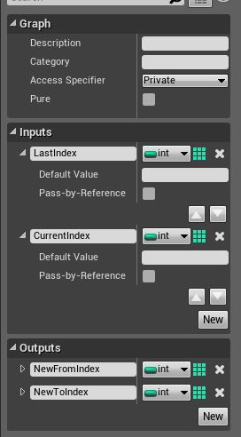
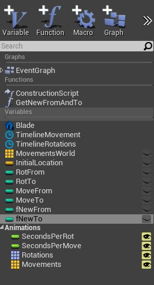
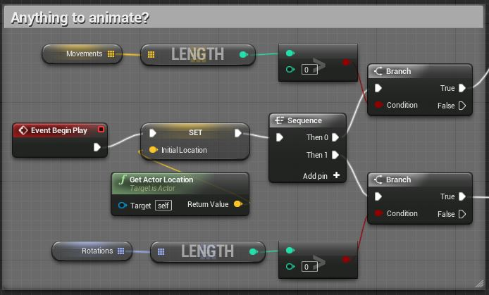
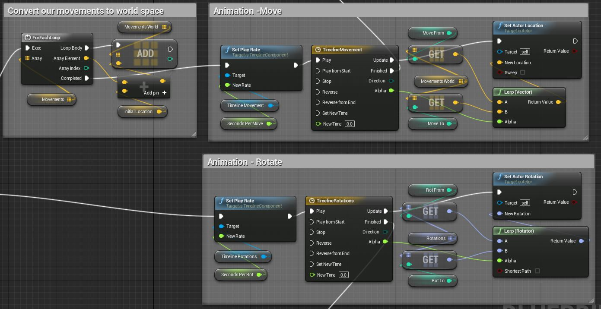
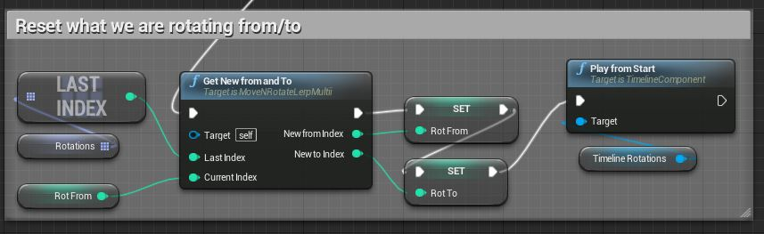
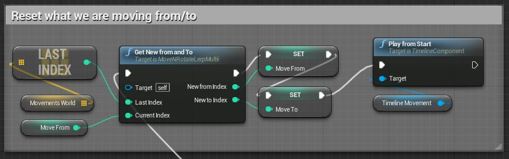
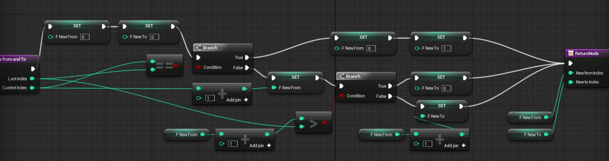
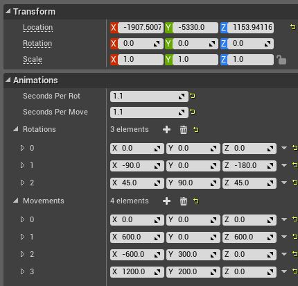

Blueprint Animate Rotation and Movement Tutorial
Contents
Purpose and Use
The goal of this blueprint to create a flexible system for a level designer to drop an actor in and have an arbitrary list of keyframes for movement locations and or rotations. Also, and added bonus this particular blueprint shows how you can make your animations have a variable speed while the rotations and movements each having their own speed (in the animated gif below they are both running at the same speed). The end result is something that you can have moving along a train track so to speak, or some kind of swinging rotating moving axe that chops things up into pieces.
These animations are designed to loop from start to finish, then, once the final two locations or rotations have been animated it will then rotate or move from the last position to the first. This is my first blueprint, if you know of a better way to implement this let me know.
Note...the skip that you see below is simply the gif starting it's loop over, i was not able to time the start/stop of the recording using LICEcap to be so precise.

Assumptions
I assume you know how to do the following...if not, go to unrealengine.com and head into the tutorials section.
- You know how to create and edit blueprints (knowing how to make one of any good use in not a prerequisite however).
- You know how to make a box brush and convert it to a static mesh in the editor.
- You are willing to work on this a little as I'm not giving you a 100% click this and type that tutorial, but, I am giving you the "source code" if you will for this blueprint as you will see in the screenshots below.
Blueprint Setup
- Create a new brush, a long rectangular one will do like I have above, or some cool samurai sword would be even better!
- Convert this brush to a static mesh in the editor.
- Create a new blueprint and name it what you like.
- Add your new mesh as a component of the blueprint.
- Create the variables, timelines and function as shown below.
Variables
-
- SecondsPerRot (editable, default = 1)
- SecondsPerMove (editable, default = 1)
- Rotations (Rotation array, editable)
- Movements (Vector array, editable, show 3d widget)
- MovementsWorld (Vector array)
- InitialLocation (Vector)
- RotFrom (int)
- RotTo (int, default = 1)
- MoveFrom (int)
- MoveTo (int, default = 1)
- fNewFrom (int)
- fNewTo (int)
Timelines
- Right click in your event graph and type "add timeline" and give it a name of "TimelineMovement".
- Right click in your event graph and type "add timeline" and give it a name of "TimelineRotations".
- To setup our timelines, double click their node title in the event graph. Then, each of them should have a "float" track. These float tracks should have two keyframes (Shift + Click). The first keyframe is at 0,0 and the second one is at 1,1.
- If you need help with timelines please see their official documentation.
GetNewFromAndTo function (an array wrapper)
Create a new function in this blueprint. Set it's "Access Specifier" and its Inputs and Outputs per the screenshot below.

In the end you should have something like this. "Blade" below is my static mesh component, yours will be different.

Blueprint Walkthrough
Init and do we animate?
As you can see below, this blueprint can function with it's defualts. There will be no animations unless the level designer has added elements to the editable Movements and Rotations arrays. Also, we set the initial location which you will see why next. 
Setup our Animation Nodes
Our two Branch nodes in the above screenshot take these two paths in the screenshot below respectively. Before we setup our animations I need to point something out. All the elements that get added to the "Movements" array by the level designer will be converted to world space. So it's important that when they get created in the editor to do so with the rotation transform at 0,0,0 (if using the 3D widget for each one). Otherwise, the movement animation wont be what was desired. We do this so we can possibly procedurally spawn this blueprint in our level and have the movements be relative to wherever they are spawned.
We have two timelines, one for rotation and one for movement. You can see how we change the play rate of the timelines, wireup the update of the timelines and wire up the finished. The updates lerp and then set the new location or rotation. The real trick is all the ...to and ...from variables. Further down I will show you a function that sets those magic variables for us. 
What to do on animation finish?
This is the place were we call our function and set the outputs that will be used in the next time we do our animation. That function below GetNewFromAndTwo , wraps our movement and rotations array. By wrapping the array we always get a valid index for the next item to animate to. That function is shown in the next section.
1. Create the nodes below, then, wire up the "Finish" of the TimelineRotations node to the "GetNewFromAndTwo" as seen below. 
2. Create the nodes below, then, wire up the "Finish" of the TimelineMovement node to the "GetNewFromAndTwo" as seen below. 
GetNewFromAndTo function
For lack of a better name I choose to name it this. Feel free to change it. Why is this a function? Because we need it twice, once for the movement and once for the rotations. I loathe duplicating code and feel the same when blueprinting. "DRY it up"...."don't repeat yourself" if you can help it and make functions in your blueprints! However, at this point in time I think Blueprint functions lack the proper feature to have variables scoped in their own function with the same user interface (get/set) like any other blueprint event graph variable.
That's why we have the hack variables "fNewFrom" and "fNewTo". Without these we would have to use the "Local Variables" that you see in a function, and to be honest they seem very lacking right now. These are hack variables because they are exposed outside of our function and we may accidentally edit them. Also, there could be a possibility that the finish event of our two timelines collide over these (although doubtful unless timelines are multithreaded?). 
The Final Blueprint
Here are the settings I used that you see in the animated gif above after I placed this blueprint into my level. And after that is the thumb for the full blueprint in all it's glory. If you know of a better way to implement this please do let me know as it was a learning process for me.
